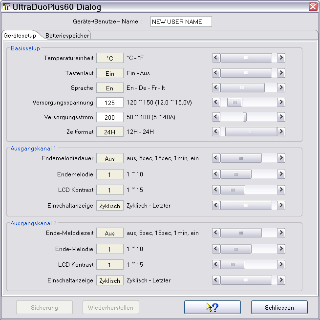
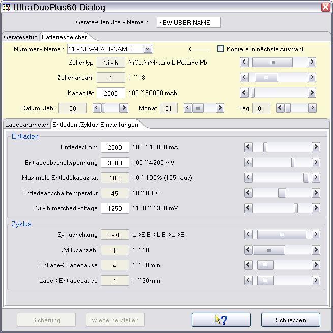
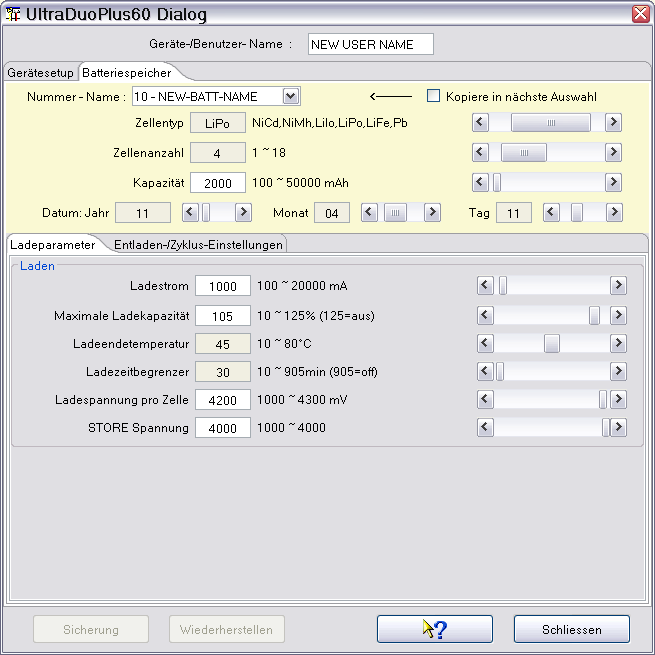

Der Ultra Duo Plus Gerätedialog dient zum Konfigurieren des Gerätes selbst, Identifikationsname, Tastenton, u.s.w. Das Wichtigste ist aber die Konfiguration der Batteriespeicher mit dem Zellentyp, der Kapazität und den Lade-/Entlade-/Zyklus-Parametern.
Nachdem der serielle Schnittstelle über den Geräteauswahldialog eingestellt ist und dieser Gerätedialog aufgerufen wurde, wird automatisch die Kommunikationsschnittstelle geöffnet und die wichtigsten Daten ausgelesen. Hierzu gehören die Basiskonfigurationswerte des Gerätes selbst. Die Auswahl der Batteriespeicher erfolgt durch Auswahl mittels der Dropdownbox. Die Einstellung der Werte selbst erfolgt über den Schieber, oder bei weiß hinterlegten Feldern durch Tasteneingabe.

Hinweis : Wichtig ist einen Gerätenamen anzulegen, da dieser Name für die Identifikation eines Datencache benutzt wird. Dieser Datencache wird beim erstmaligen öffnen des Dialogen initial gefüllt. Deshalb dauert das Öffnen auch etwas länger. Das der Datencache gefüllt ist kann man an der Aktivierung der Knöpfe erkennen, die für die Verwaltung von Sicherungskopien gedacht sind.
Die nachfolgenden Bilder zeigen Lade-, Entlade- und Zyklus-Parameter für einen NiMh Akkumulator.

Die nachfolgenden Bilder zeigen Lade-, Entlade- und Zyklus-Parameter für einen LiPo Akkumulator.


Hinweis : Es werden nur die Parameter zur Einstellung angeboten, die für den gewählten Batterietyp Relevanz haben. Die Konfiguration von Stufenladungen wird zur Zeit nicht angeboten und ist einer späteren Version vorbehalten.
Die Aufnahme von Datenkurven wird einfach durch Drücken der "Start Aufnahme" Taste gestartet. Die Umschaltung der Lade- bzw. Entlade-Kurven erfolgt automatisch, da die vom Gerät gelieferten Daten diese Information enthalten. Die Anzeige springt automatisch auf den Datenkanal, der als letztes Daten liefert. Im Bild ist ein Ladevorgang eines zusammengeschlossenen LiPo Akku mit 8 Zellen zu sehen. Es werden nur die Kurven angezeigt, die auch Daten enthalten, dadurch entsteht der Sprung von ZellenSpannung 4 nach 8, was den Balancerausgängen des Ladegerätes entspricht.

Ist das Gerät über einen gewissen Zeitraum inaktiv, wird der serielle Port geschlossen.